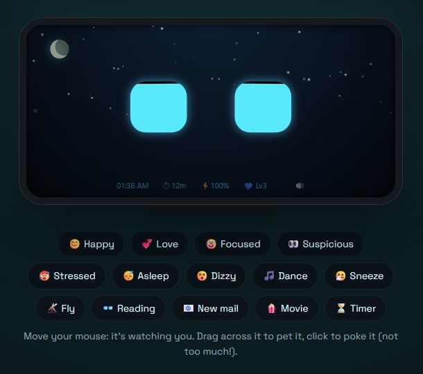

Desk Buddy
Turn your spare phone into a desk robot.
A free Windows app that makes an old phone a little robot friend. It follows your cursor, dances to your music, reads along with your documents, sweats when the CPU is maxed and reminds you to stretch. Nothing leaves your own network.
Version 2.4.3, November 2026 · Free for Windows 10 and 11 · Python, HTML and Web Audio
